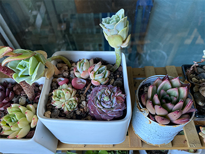
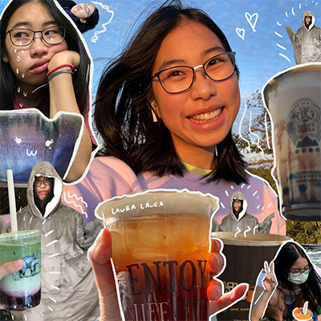

I noticed the rule of thumb that mentioned in the UX game design article in apps or websites that I have been using. Game Design UX Best Practices reveals that: “User decisions which are good for your game are placed on the right side of the popup ”(Dori). As users, I also recognize these tricks from the app owners that try to gain profit from users. It is interesting to view it from a different perspective. As a user, I always get annoyed by these tricks because I will accidentally click the button that commits unwanted changes. Sometimes, I do need to look carefully to avoid clicking buttons that might share app links or purchase rewards. Conversely, as an UX designer or an UX learner, these user designs are good designs that will benefit the games or companies.
The techniques of setting anchor points for draggable objects are useful to learn. I think many UX game designs are undervalued and unrecognized because users are unlikely to notice the common designs. Game design is a bit different from common UX design. When UX design aims to enhance the user experience, game design also considers to improve design to achieve desired results (rating apps, making purchases, and sharing games) to make profit.
Visual Thinking Analysis
Part One
My image shows types of succulent plants at my home. The majority types in this image are Echeveria and Graptopetalum hybrids. Plants from these photos have rosettes. They look like flowers with thick “petals”. The edges of the leaves grow with a different color from their leaves. The very left plant is called Echeveria minima. Plants that have pink edges fall under the Echeveria minima category. The interesting thing about succulent plants is that although they resemble each other (in the image), they are actually from different families. Under each family, there are specified types of succulent plants. I am going to use this image as one of my collections for the Studio 2 project. My studio 2 will talk about the types of plants and how my family takes care of them. I want to show the audience my family’s “garden”, a big wooden shelf with plants placed on top. My collection tries to illustrate part of my life to the audience. Influenced by my mom, I also started planting succulents.

Fig.1 - Jasmine Li, 2023
Part Two
My partner’s image is a collage photo of boba drinks. The edited collage includes photos of boba drinks, pictures of Laura holding her drinks, and a few images of Laura herself. The message of this image is clear. It is easy to infer that Laura, as the author or narrator, informs the audience about the boba places she went to. She might be listing the boba drinks she knows about or writing an evaluation report about the boba places she likes. I notice that her boba drinks are from different brands, so I assume she will be writing about the boba shops instead of types of drinks. The image amuses viewers and grabs their attention quickly with Laura’s selfie at the center. Viewers instantly understand who the author is and who will be the potential target audience. The image has some cute hand-drawn decorations, which very appeals to the audience as well.

Fig.2 - Laura Yien, 2023
Visual Thinking Strategies Research
Thoughts
MICHAEL GONCHAR’s 10 Intriguing Photographs to Teach Close Reading and Visual Thinking Skills presente a way to practice students' visual thinking skills. People rely on using everyday observations to make inferences about the background stories of photos. People form a better understanding of the world by analyzing and viewing photographs. These photographs represent the daily lives of people. When we see these photographs, we have a better knowledge of things we have seen before or things we have no ideas about. Oftentimes, they portray people who are living with completely different lives. As a result, we learn about the unknowns and guess the background stories from these pictures.
Stelo Storiesis an interesting interactive website that uses images and videos to deliver its message to users. By introducing different films and their background stories, the website uses mouse interaction features and smooth scroll function to enhance user experience. The way Stelo Stories tells stories resembles a slideshow. Users have to scroll their mouse over to move on. The yellow “light” also follows wherever the mouse interacts with the webpage.
Overlays Design Pattern Research
Summary
Naema Baskanderi’s Best Practices for Modals / Overlays / Dialog Windows introduces the use of modal windows. Modal windows are the child windows in front of the main window. The usage of these pop-up windows includes grabbing users’ attention, showing additional information, and requiring user input. The most common modal windows are sign-in forms and alert boxes. The design of modal windows often needs to darken the background window to keep the pop-up windows visible to users. Modal windows are usually placed in the upper half of the screen and take up less than 50% of the screen for overlay. Modal windows need to have a descriptive title to inform users of their purposes. The button labels are positioned near the bottom or below the text. Buttons are significant in the UI process because users need to click the buttons to exit and return to the parent application or navigate to another page.
Research Form Design
Summary
Survey research is a crucial step in the UX process. When visitors submit and input their information, it’s significant to create effective forms. Great form design, including designing the form’s layout, format, and UX appearance enhances the UX experience. Salim Ansari’s Best practices for form designoffers 20 helpful strategies for improving form design.
One major takeaway from the article is that empathy is the key, think of yourself as the one filling out and submitting forms. Think about the instances you, as a research participant, try to fill out forms. People prefer straightforward and easy-to-understand forms. Basic web form design should include creating single-column layouts, using an asterisk (*) to mark the required fields, and asking easy questions in the beginning. Another tip from this journal that I did not notice before is to place a form label above an input field instead of inline form field labels. Labels that are located inside the fields themselves disappear once users fill in the input, which leads to many drawbacks. Another strategy to create a more efficient form design is to avoid a dropdown menu and use multiple selections to make all options visible.
Helpful Tool
Google Forms is a convenient and easy-to-use software to create forms and surveys. Most people are very familiar with Google Forms. Forms generated from Google Forms always have a single-column layout and legible fonts. It is a useful tool for new designers to get started, with no prior experience required.